There are 4 fundamental steps that are essential to learning a code source. Here they are in order of importance:
- Learn the fundamentals
- Learn the language/build tools
- Learn the framework
- Learn the source
When it comes to 2 through 4 you can kind of do them at the same time. A large code source will speed these up quite a bit.
For the sake of coders who just want to learn the source I decided to put step 4 at the top of the article. You can see steps 1-3 after "learn the source"...
Learn the Source
There are a lot of small actionable tips that make learning a code source much much easier, quicker and efficient.
I highly recommend all of them. Try to do these one at a time in all your IDEs where you will be learning a large code source.
Mostly, these are tools for navigating and reading code in a hyper efficient way.
Without these it may seem somewhat impossible to learn humongous code sources.

Photo by Garrett Parker
It is kind of like travelling by boat in a huge ocean. You absolutely need all the navigation tools you can get to learn the seas.
That is what these are. Ways to learn the sea...
All JetBrains IDEs have this stuff setup already, so I will be using IntelliJ to illustrate these features.
Let me give you a list of things to do...
Find a shortcut to navigate the stack
This is an amazing tidbit that will absolutely make navigating and reading source code much simpler.
Take a look:
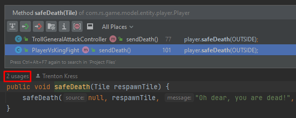Screenshot from IntelliJ
You should always navigate the stack and be able to easily see the usages of a function or class.
In IntelliJ, the shortcut is the middle mouse button.
In VSCode, Visual Studio and non-Jetbrains IDEs I believe you have to set it up yourself.
These usages and reading the actual code within the function will tell you all you need to know on how to use that function.
This is my most used feature when using an IDE.
Find a shortcut to link the file you are in to the project explorer
Another super actionable and simplification tool is the "find file in project view".
As you navigate the stack and usages of a function, you can easily visualize where the file/code is at in the project explorer.
Take a look:
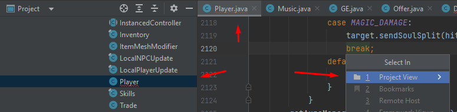Screenshot of IntelliJ
In IntelliJ this can be done with "ALT+F1" but instead I recommend making an easy shortcut you can remember without effort.
As you read a source code with 1000s of files out there or more, you should be navigating the stack and constantly going in and out of files to really see where everything is.
You can thoroughly learn the file structure this way.
In VSCode, Visual Studio and non-Jetbrains IDEs you have to set it up yourself.
This is my second most used feature.
Use a structural view
A structure view is a visualization of the class in a quick table.
It has both properties and methods listed out.
This highly simplifies navigating a large file.
Take a look:
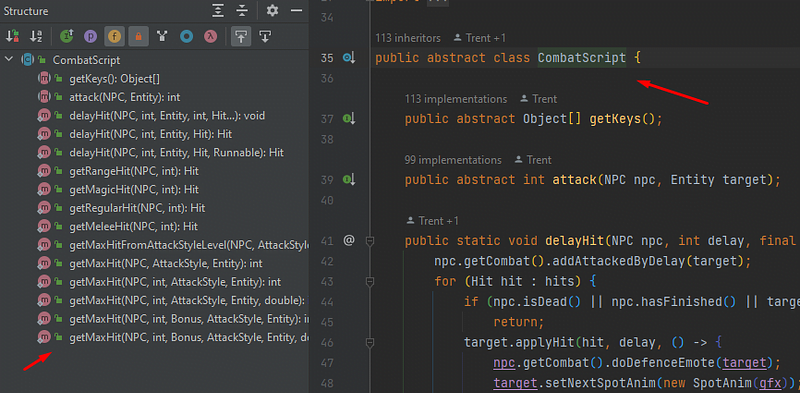Screenshot of IntelliJ
You can click each method on the left and go to it. Then, use your usages hotkey and find in project view (the two above) and navigate the source code extremely quick.
This code source I use has 1000s of Java files for an MMORPG and I quickly navigate through the whole thing using these hotkeys.
Your goal should be to make navigation and reading as easy as possible.
I honestly don't know if this feature is available in other IDEs. Just know this is called a "structure view".
This is my third most used feature.
Use a find in all files
This is another highly actionable tidbit that simplifies learning a code source.
You should be able to right click a folder or the whole project and easily search for a text.
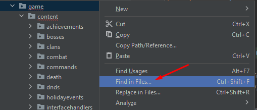Screenshot from IntelliJ

Screenshot from IntelliJ
This way if you don't know where a function is in the project you can easily find it.
I often use this because the file structure is so deep with so many files it is impossible to know where everything is exactly.
But for some reason I remember the class names and function names.
After going to that file I can search the project view and go up and down the stack (using previous tools).
For sure every IDE has this, but usually you have to set it up.
This is my 4th most used feature.
Always make sure you have intellisense
Absolutely essential, intellisense is a life saver.
I never use a code source without this feature.
I have raised some eyebrows with how I talk about intellisense.
But basically, this means your IDE suggests which properties or methods you are trying to use.
It even (should) filters out private variables/methods.
Take a look:
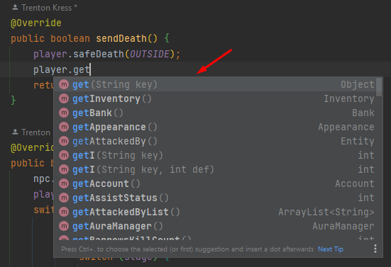Screenshot from IntelliJ
By typing out the first few letters "get" you can see all the methods and variables/fields that start with those characters.
Now I can go to those functions and apply all the hotkeys from above.
Every IDE has this, but it looks different for each.
This is an essential feature.
There is something similar but uses Machine Learning called co-pilot. I have found co-pilot to be not that great for large code sources. At least, not as great as ye old faithful intellisense.
Personally, I disable co-pilot on all IDEs. But a lot of people swear by it.
Use a good commit viewer and diff tree
You will be amazed at how visualizing changes within a Git commit can help you understand the latest changes in a large code source.
Lines are color coded and the original is usually on the left with the new version on the right.
If I am trying to debug other peoples logical errors and commits, commit viewer and diff tree is what I use.
I have used this GUI to solve problems that the rest of the developers couldn't solve for 6 months!
It took me about 3 days once I tried to fix it...
Take a look:
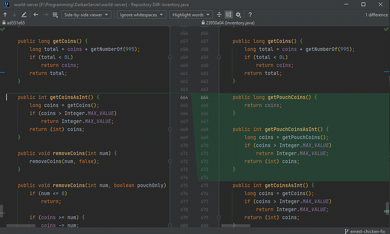Screenshot from IntelliJ
Here we can see this developer added getPouchCoins() and getPouchCoinsAsInt().
This is much easier than just viewing the file and trying to find the newest editions yourself.
This is available on GitHub & VSCode as a plugin, but I find JetBrains Commit Viewer to be most intuitive to me.
Also when there are multiple branches or commits I want to sift through, each with a bunch of features, I often use diff trees.
Basically, it shows you all the differences between two code sources or through a series of commits.
Every IDE has this but it looks quite different in each.
In JetBrains you can right-click and compare, take a look:
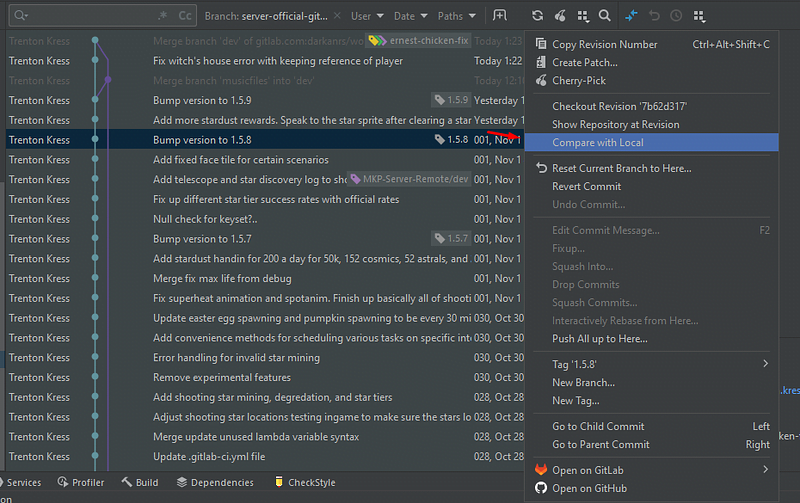Screenshot from IntelliJ
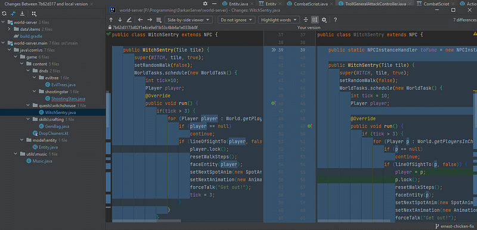Screenshot from IntelliJ
I am comparing the code source from November 1st to the code source on November 3rd.
If you have a large team and you need to read up on the latest updates, this is the way.
The setup and look is entirely different per IDE.
I use this to debug commits.
Ask a LLM about certain parts
This is fun, though employers don't seem to like it. I have brought up this tip in interviews and was thoroughly rebuked with a story about proprietary software being inserted to Chat-GPT.
So, here is the thing. Any code you put into an LLM, that LLM will learn. So if you put very sensitive code into the machine learning model, if someone else asks for it, it might actually show up!
But, asking an LLM to explain code is extremely useful nonetheless.
Most advanced software engineers do this without telling their employer. Obviously they don't put sensitive code in there. But they ask for general tips on learning the source and it is very helpful.
Use a UML generator
I didn't know about this feature of IDEs until later on in my programming journey.
But if you are using a highly object-oriented code source, a UML version of the inheritance structure will be highly useful to you.
Though I often find I only need to see the UML chart once and to get the inheritance structure memorized...
Take a look:
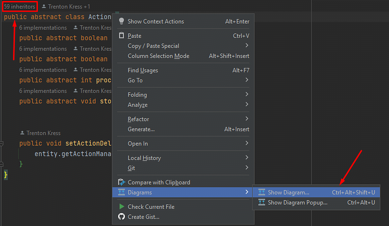Screenshot from IntelliJ
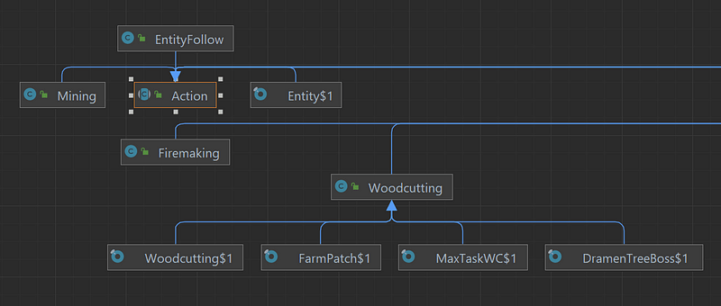Screenshot from IntelliJ
For me personally I absolutely need this UML chart but only a few times at the beginning just to see the structure of the classes.
I only use this feature a few times at the beginning.
Learn the Fundamentals
Now, if you are trying to learn a code source without knowing the fundamentals, such as basic programming syntax, compiler/interpreter theory, loops, classes & math, you will struggle.
It will seem impossible to understand a large code source at say work or an open source project.
Photo by Gia Oris
By understanding the fundamentals of Computer Science and programming you will have transferrable skills to all languages and frameworks.
This is why the fundamentals are, well, the fundamentals. They will help you read any and all code sources.
See my fundamentals guide which I wrote about in more depth.
Learn the Language/Build Tools
The current meta or standard way self-taught developers nowadays are learning languages is through Udemy. Preferably you know the language/build tools before taking on the code source.
These two things, language and build tools, besides the fundamentals are perhaps the best thing you can do to learn a code source, especially at the beginning.
The language can more easily be learned through a full course like Zero to Hero courses on Udemy, hopefully implementing small projects in the course at the same time.
It is interesting how build tools are highly linked to the language. It is why I put them together.
Photo by Mathieu Turle
These build tools are often stacked on top of another.
For example, Gradle is built on a layer above Maven in Java. If your code source uses Gradle, it is a good idea to learn Maven first.
Another example of this is CMakelists in C++.
It automates Make. You should learn the basics of Make before CMakelists. Additionally, VSPackage is written to automate CMakelists, so there you have your order of learning build tools.
Examples of build tools ordering:
- Make -> CMakelists -> VSPackage
- Maven -> Gradle
If you are working on a large Java Spring app or a C# ASP.NET app, the build tool scripts are usually quite complex.
Separating your learning by understanding every layer sets you up for mastery of a code source.
Fundamentals will be supported by learning these as well.
Learn the Framework
Let's assume you know the language and build tools well. If you don't, you have your work cut out for you.
You will have to learn the language, build tools and framework at the same time. Not the easiest task.
Now, how would you do this?
Photo by Victor Freitas
Well don't be overwhelmed, as you learn both the framework and language, the code source will get easier and easier, to a point where everything can be understood. It is mostly a matter of effort over time.
Watch a Udemy/YouTube course
Same as the language, Udemy is the meta. The courses there are so good, developers are flocking in the thousands and learning from them.
If you need to learn something like ReactJS, Spring, or Django these things can be taken care of by learning from these videos and creating small projects.
It really is that simple.
Create your own project in the same framework
While you are watching these courses, you will need to create your own project or write code in the code source at the same time.
Actually using the framework is where the understanding you need is at.
I have been a part of a medium sized Next.js project before, in an open-source MeetUp group.
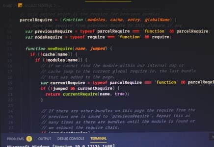Photo by Ferenc Almasi
By creating my own NextJS project and watching Udemy, within two weeks I was contributing to the code source with ease.
Well, I had the advantage of knowing Javascript and NPM (build tool) really well. More than everyone else in the group, so, it was just a matter of learning the framework.
Anywho, I hope you learned something...
Happy coding!
Resources
A guide on learning the fundamentals: Why the Fundamentals of Coding Are the Key to Success
Pros & cons of Jetbrains IDE: Pros & Cons of JetBrains IDEs